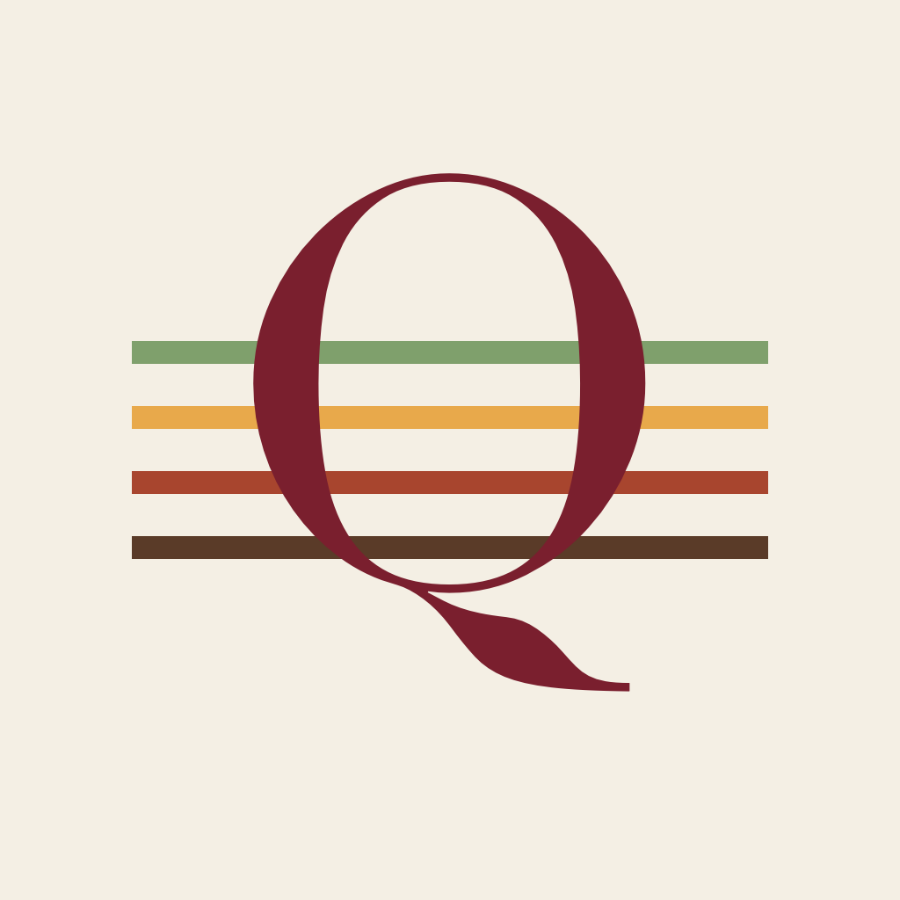

The 2026–27 season

Quartets
A word puzzle for iPhone, printed like a concert program.
Program
- IToday's QuartetSixteen words hide four groups of four. Everyone gets the same board, and four mistakes end it.
- IIAllegroThree boards on one clock, a new set each day. Optional Game Center times.
- IIIThe Sunday QuintetA bigger board once a week: twenty-five words, five groups of five.
- IVRepertoireEight packs of fifty boards, from Kitchen Table to Passport.
- VThe SeasonEvery past Daily, back to No. 1.
Support
How do I play? Tap four words you think belong together, then Submit. "One away" means three of your four are right. The first launch opens a short practice board. To play it again, open the Green Room and tap Rehearse again.
What does the Season Ticket include? Every past Daily and Quintet, all the packs (new ones too), full stats in the Notices, two more color themes and a second streak freeze each week. Today's board, the last seven days, this week's Quintet, Allegro and the Starter pack are free.
How do I restore a purchase? Green Room → Season Ticket → Restore purchases. Manage subscriptions in iPhone Settings → your name → Subscriptions.
Is Game Center required? No. It stays off until you turn it on in the Green Room or on the Notices page.
Something wrong with a board? Write to shchukavlad4@gmail.com with the board's number.